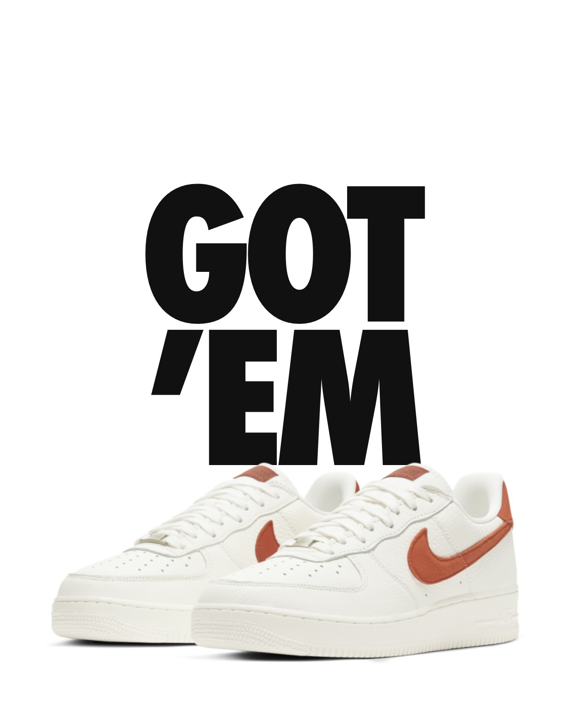
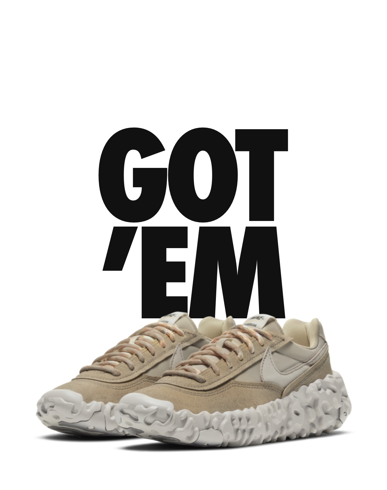
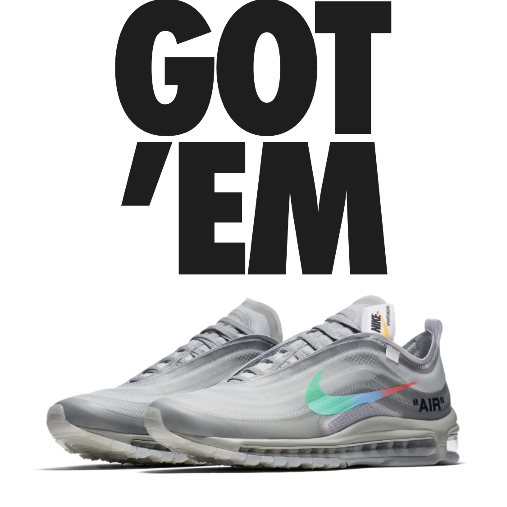
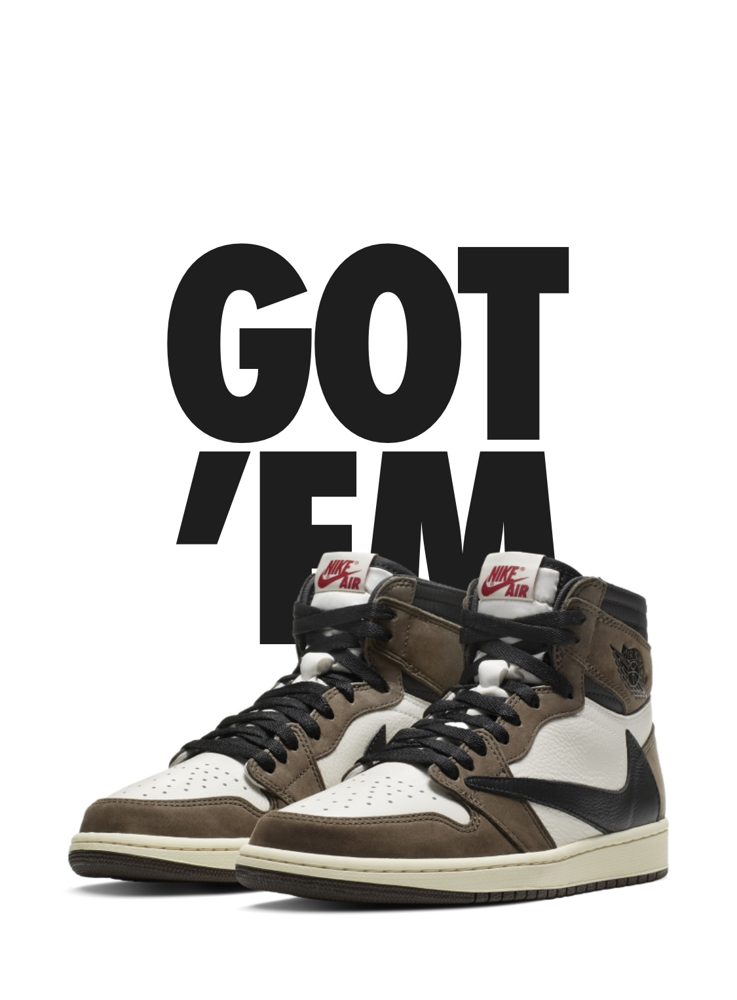
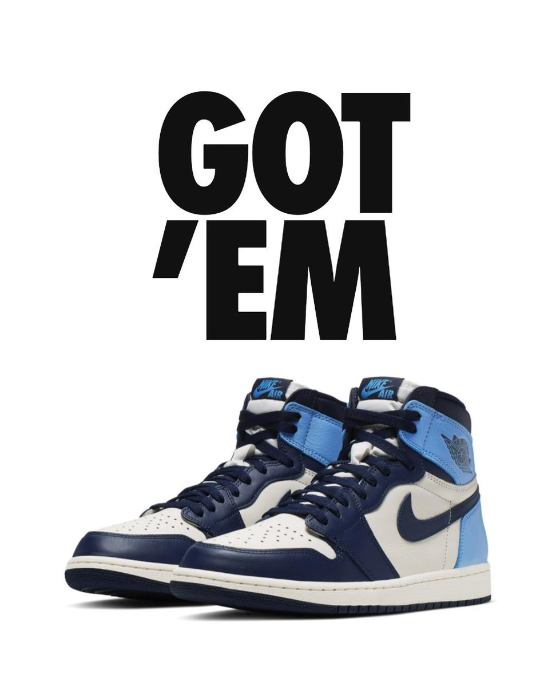
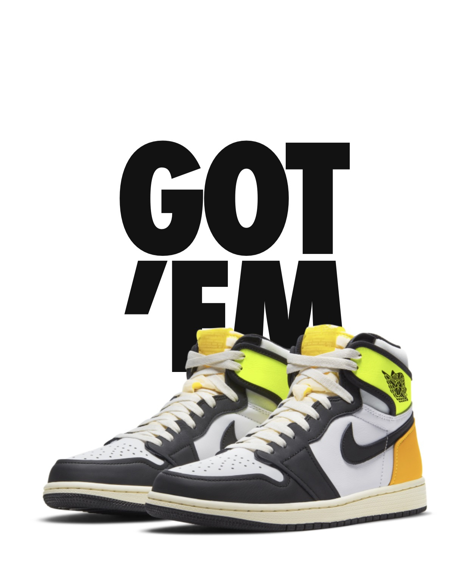
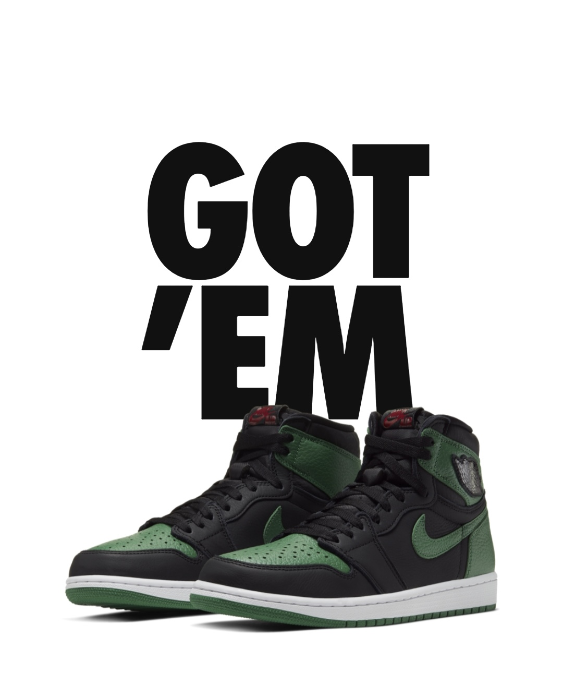

WELCOME TO "HOT WHEEL BOUTIQUE!"
Hot Wheel Boutique, where only Hot shoes are allowed!

The Nike Air Force 1 ‘07 Craft ‘Mantra Orange’ presents a simple two-tone colorway
of the vintage silhouette originally made for the hardwood.
The sneaker’s off-white tumbled leather upper is accented with
dark orange suede detailing on the Swoosh and heel tab, the latter
affixed with a discreet AF1 tab in the same autumnal hue.
In keeping with the shoe’s performance origins, the midsole
houses Nike Air sole cushioning in the heel, while the rubber
outsole features a pivot-ready traction pattern.

The Nike OverBreak SP ‘College Grey’ showcases subdued
neutral tones on a retro-inspired silhouette that blends
old and new, featuring details borrowed from both the Daybreak
and OverReact. Multicolor laces secure an upper constructed
from lightweight textile with synthetic suede overlays.
A woven tongue tag and oversized Swoosh contribute to
the sneaker’s heritage aesthetic. Responsive cushioning
comes courtesy of a Nike React midsole, supported underfoot
by durable rubber in high-wear areas.

The Off-White x Air Max 97 ‘Menta’ features a translucent textile upper finished
in Wolf Grey, complemented by Virgil Abloh’s signature text and tonal zigzag
stitching throughout. The neutral color scheme is disrupted by a multicolored
Swoosh that transitions from green to blue to red, while underfoot, a smoky
grey rubber outsole maintains the shoe’s translucent theme.
Made in collaboration with Ben & Jerry’s, the Nike Dunk Low SB ‘Chunky Dunky’
replicates the packaging used for the ice cream brand’s Chunky Monkey flavor.
The leather upper depicts blue skies and green pastures, while pony-hair overlays
are rendered in a spotted cow print. A yellow leather Swoosh is
treated to a melting ice cream effect for added visual flair.
Atop the tongue, the woven tag features a Chunky Dunky callout
alongside Nike SB branding.

The Travis Scott x Air Jordan 1 Retro High features a new look on the iconic
silhouette, thanks to an oversized backward-facing Swoosh on the
lateral side. A traditionally oriented Swoosh graces the medial
side of the upper, which is built with a blend of white leather
and brown suede. Additional unique details include a double-layer
construction on the collar and Scott’s crudely drawn face logo
embossed on the heel.

The Air Jordan 1 Retro High OG is a work of nostalgia, modernizing
the 1985 icon's distinctive elements to honor Michael Jordan's
legendary career arc. Debuted in August 2019, this 'Obsidian'
version tributes MJ's college alma mater through a team-inspired,
color block palette on the leather upper. Matching branding notes
and Swooshes play their part in the homage. The Nike Air infused
midsole and circular rubber outsole supply classic comfort and traction.

The Air Jordan 1 Retro High OG ‘Volt Gold’ gives the iconic model a subtle
makeover that takes its design cues from previous Air Jordan 1
colorways. Unique details include a reversed translucent tag on
an exposed foam tongue and detached collar flaps in an
eye-catching shade of Volt. The rest of the leather upper is
rendered in tri-tonal color blocking, featuring a crisp white
base with contrasting black forefoot overlays and a heel panel
in University Gold.

Released in early 2020, the Air Jordan 1 Retro High OG 'Pine Green 2.0' comes in
a simple colorway of Pine Green and Gym Red on a black template. When Peter Moore
designed the first Air Jordan in 1985, he wanted to provide support for the dynamic
superstar with the freakishly athletic game—without sacrificing comfort. He designed
a high-top shoe with durable leather featuring upper eyelet straps, heel and midfoot
overlays, and a perforated toebox. The history of flight had begun.